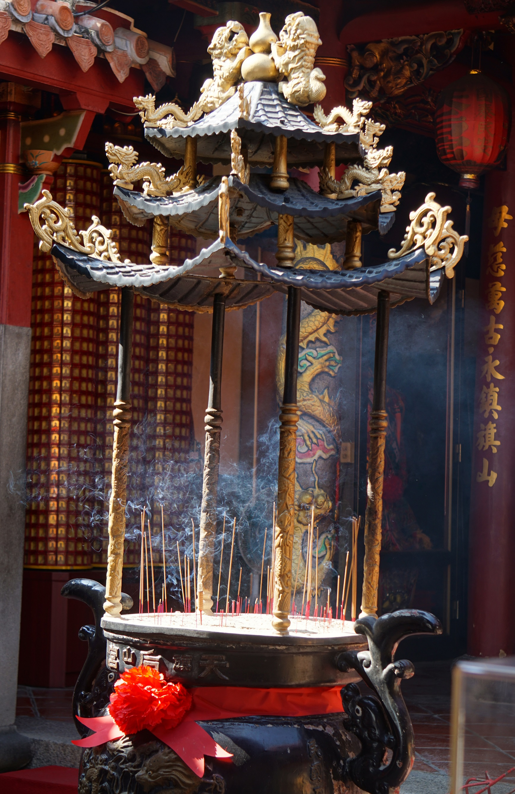
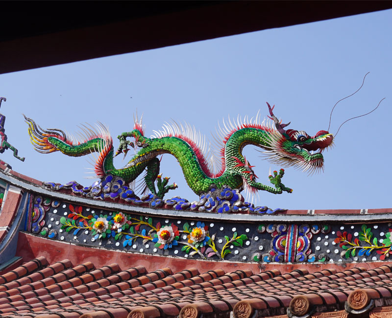
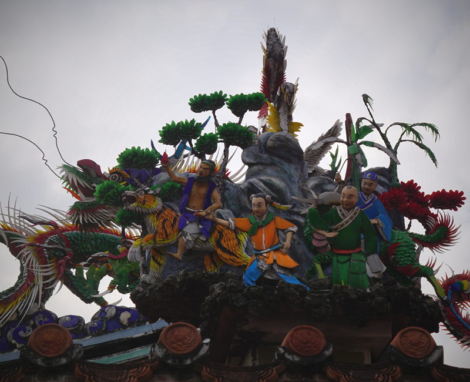
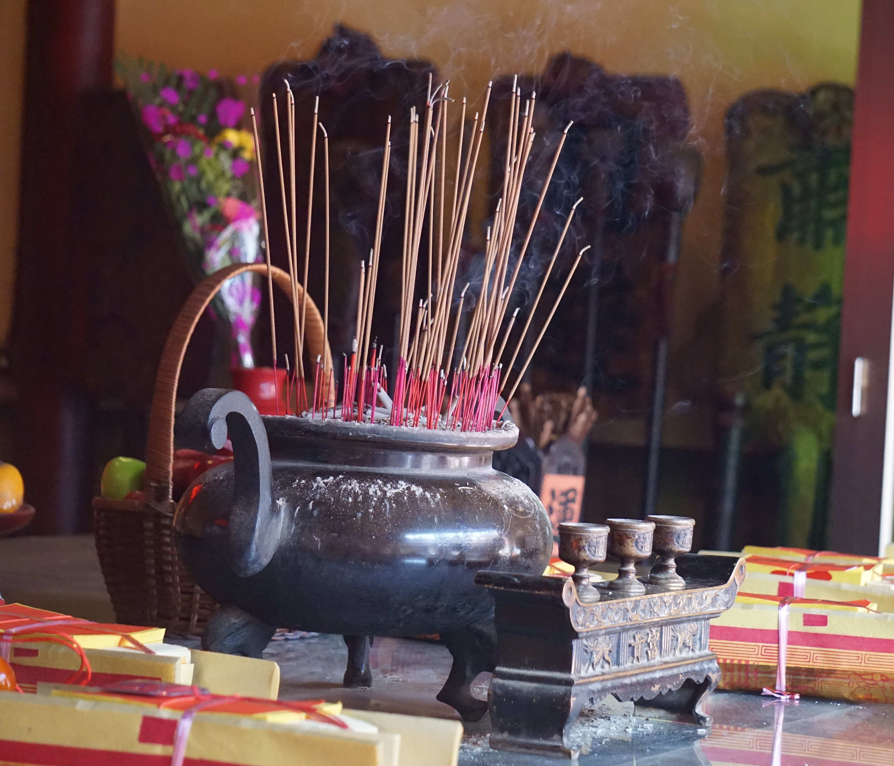

生活起點
寺廟，是在地人民生活情感交換中心，也是居民精神撫慰的場所；廟口的阿公永遠有說不完的故事而廟埕聚集的攤販，永遠是當地小吃的指標。每到神明生日或特定節日，謝神的野台戲或藝陣，甚至演化成當地特色，聚集了成千上萬的人潮，晉階國際鎂光燈聚焦的舞台。認識廟宇，可以從信仰著手，也可以從寺廟本身的建築、工藝或背後代表的聚落歷史故事開始。

我們主要介紹旗山天后宮、期望民眾到寺廟參拜、遊玩的同時，也能從古蹟、歷史建築的角度瞭解寺廟。廟宇與民眾信仰及生活空間密不可分。從廟宇的發展歷史、建築格局與工藝美學，即可看出在地居民獨特的聚落人文特質。
在這裡運用細膩柔美的文字，引導大家的目光流連於這些廟宇獨特的工藝之美，尤其和當地耆老時一一詢問相關壁畫、泥塑剪黏描述的故事及碑文陳述的歷史，因此蒐集了相當多的一手資訊；其次，本文最獨特之處，更收錄了幾位為廟宇巧手裝扮的藝師工匠生平，讓讀者欣賞寺廟工藝之美的同時，能夠明白幕後推手的心血，肯定其付出的努力。而本文為方便讀者按圖索驥，更置入大量精美圖片，版面編排也採「圖隨文走」，好讓讀者對照觀看，除了介紹廟宇本身，對於廟宇祭拜的神明，也有專文介紹。相信透過此次介紹，即能瞭解這些文化資產的歷史、工藝與聚落人文，進而從中感受與領略「信仰」這種無形資產的存在與意義。
寺廟的主角雖是神明，卻與「庶民」生活息息相關。常民文化在寺廟做了最佳演繹，瞭解一座寺廟即可略知在地文化，期盼能帶領大家走一趟高雄市的廟宇和文化資產，來趟豐富的時光旅行。
信仰足跡

我們從寺廟的角度切入，藉由寺廟與常民文化的連結，讓民眾感同身受，文化資產並不是束之高閣、用玻璃和圍牆供養高不可攀的存在，而是就在你我的身邊，就像鄰居一樣親近。
本次亦針對主祀神明有專文介紹，可以讓大家既賞心悅目又實用的廟宇導讀外，也可以一窺有形文化資產的建築之美、以及無形文化資產的傳統藝術巧奪天工之處。
我們介紹相關寺廟的建築以及旗山老街美食小吃，更嘗試從文化資產的角度描寫，挖掘廟宇與居民的連結，傳達廟宇居民為生活共同體的輕鬆自在。然後在這裡帶領大紮走進到廟宇當中，從廟埕到入口的三川牌樓各色雕刻。最後還能順便走一走附近的，這趟廟宇之旅，絕對包您滿意。
寺廟工藝
古蹟和歷史建築，是看得道、摸得到的歷史，卻因年代久遠或疏於親近，看似冰冷生硬，卻蘊含特殊甚或獨一無二的建築格局與工藝美學，其與所在地居民的關係更是密不可分，進而發展出獨特的聚落人文特質。
先有聚落，然後才有寺廟。這些古蹟和歷史建築所在的聚落當初如何形成？如何一磚一瓦築起守護廟？不同時代的政權更迭又曾產生哪些影響？要解這些疑惑，必須從史籍文獻著手，因此從歷史沿革說起，文史資料雖嫌乏味，但要瞭解一座古蹟或歷史建築，歷史與言格是基本功。


一座座已建構版百年甚或是數百年的空間，彷彿同時嗅聞到不同時代的人們所供奉鮮花水果的花果香味，每一絲徐風，猶迴盪百多年前善男信女在此虔誠膜拜時的喃喃祈求，精雕細琢的木雕與石雕、色彩艷麗姿態萬千的泥塑與剪粘、刻意形塑人物走獸古樸表情的交趾陶，就很想知道，這些裝飾工藝由那些藝師所施作？故事題材取自何處圖案背後有甚麼特殊含意？
而我們決定以主觀視線筆調，由外而內的故事方式，藉【工藝之美】─耙梳建築格局與裝飾工藝，無論是山城的素養、都會的堂皇、海濱的富麗，皆「淡妝濃抹總相宜」，其中，建廟最久的「旗後天后宮」與妙齡最資淺的「高雄代天宮」，相差近兩百八十年，將近三個世紀，不同時代的匠師所呈現的藝術風情，讓裝飾工藝更具歷史價值且多采多姿。
信仰之美
信仰，是百姓精神生活的依歸，高雄縣2010年合併後，文化資產共93處，而我們從中選出了旗山天后宮，希望讓大家能夠更瞭解這個文化資產的歷史、工藝與聚落人文，進而從中感受與領略「信仰」這種無 形資產的存在與意義。

時年90歲的台灣史學界前輩曹永和先生認為歷史是「人、時、空」三個因素互動，交織形成的結構、事態和事件。空間是人類生活和生產的基本場所，在這個舞台上，有各種人物於不同年代出來扮演而消逝，因此歷史不斷地呈現階段性的演化，然而，演員消逝後舞台仍然存在，對於人以外，他認為做歷史研究時，應重視海島台灣的地理特性，盡量擴大領域和視野。